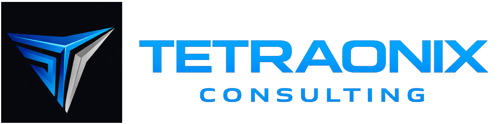

This sample case study shows how Tetraonix can combine infrastructure consulting, workflow automation, and domain-specific support to improve performance in a complex client environment.
A growing healthcare-adjacent organization needed stronger IT foundations, better process visibility, and more efficient handling of repetitive internal tasks. Their systems were functional, but fragmented and difficult to scale.
The organization also needed a partner who understood both operational technology demands and the importance of compliance-aware delivery.
This case reflects the core Tetraonix model: combining technology strategy, practical implementation, and domain-aware execution in industries where reliability, clarity, and scale matter.
The same framework can be adapted for life sciences, pharma technology, healthcare operations, AI process improvement, and broader business transformation engagements.